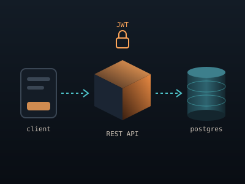
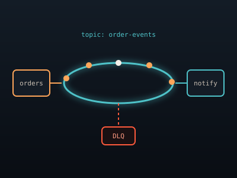
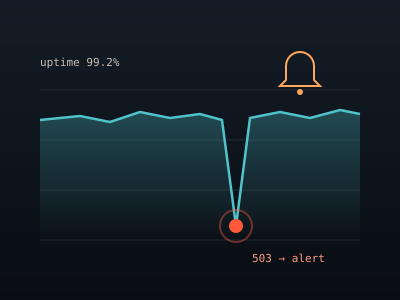
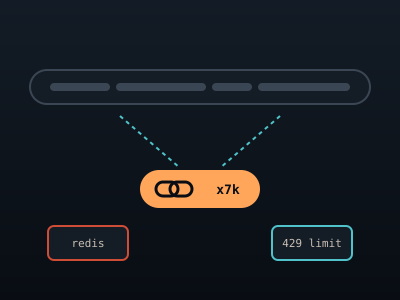
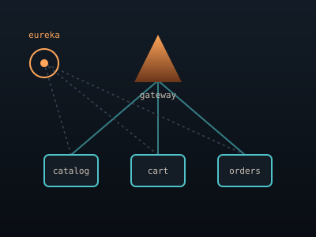

01 / проекты
Что я
построил
Учебные и пет-проекты: от простого REST API до событийной системы на Kafka. В каждом я старался сделать не только чтобы работало, но и чтобы было покрыто тестами и запускалось одной командой.

Orbit
- Spring Boot
- Kafka
- Docker Compose
Событийные уведомления: сервис заказов публикует события в Kafka, сервис уведомлений их обрабатывает. Повторы с задержкой и очередь «мёртвых» сообщений (DLQ).

Beacon
- Spring Scheduler
- PostgreSQL
- Micrometer
- Prometheus
Мониторинг доступности сайтов: проверки по расписанию, история в PostgreSQL, метрики для Prometheus и оповещения в Telegram-бота.

Shorty
- Spring Boot
- Redis
- Gatling
Сокращатель ссылок: кеш в Redis, ограничение частоты запросов (rate limiting) и нагрузочное тестирование на Gatling.

Pyramid курсовая
- Spring Cloud
- Gateway
- Eureka
- Docker
Учебный интернет-магазин на микросервисах: API Gateway, обнаружение сервисов,
каталог, корзина и заказы. Всё поднимается одной командой docker compose up.